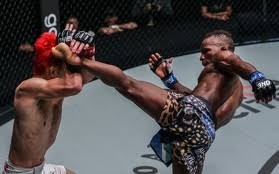
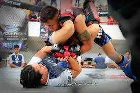
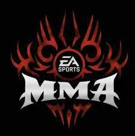
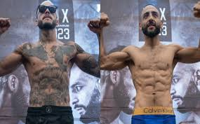
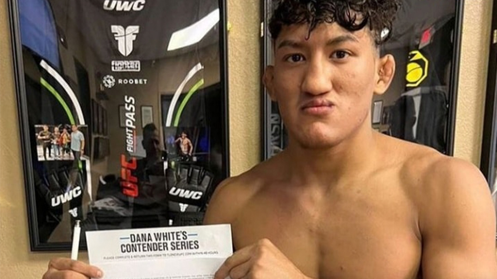
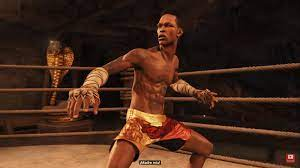

Para mi MMA es el deporte de mas disciplina que existe ya que yo siempre he tenido la filosofia de que los
deportes de contacto son los mas dificiles y los que requieren mas entreno de todos. es una combinacion de artes
marciales que se torna en una hermosa disciplina.

MMA RESUMEN
Investigación
19/11/2022
Biografia Luchadores
1.-Conor Anthony McGregor (Dublín, Irlanda; 14 de julio de 1988) es un luchador irlandés de artes marciales mixtas que actualmente compite en las categorías de peso ligero y peso wélter de UFC . McGregor fue el primer luchador de la historia en ser doble campeón de UFC, ostentando el cinturón de peso ligero y peso pluma.
McGregor fue el primer luchador en la historia de la UFC en ostentar títulos en dos divisiones distintas al mismo tiempo. Uno de esos cinturones se lo arrebató a José Aldo en 13 segundos de acción, logrando de esta forma el KO más rápido en la historia de las peleas por un título de UFC. El segundo cinturón lo obtuvo derrotando por Nocaut técnico a Eddie Alvarez en UFC 205. También se convirtió en campeón de peso pluma y ligero de manera simultánea en la liga británica de MMA Cage Warriors.
El luchador de origen irlandés también ha competido en boxeo en la categoría de peso Superwélter. Fue derrotado por Floyd Mayweather Jr. en su debut en 2017. Wikipedia
2.-Daniel Jeffery "Dan" Henderson (nacido el 24 de agosto de 1970) es un peleador retirado estadounidense de artes marciales mixtas y exluchador olímpico. Fue el último campeón de peso semipesado de Strikeforce, el último campeón de PRIDE de peso wélter (183 libras) y peso medio (205 libras). Es el primer artista marcial mixto en mantener simultáneamente dos títulos en dos categorías de peso en una promoción de MMA. Henderson es también el ganador del torneo de peso medio de UFC 17, campeón del torneo de Brasil Open 1997 de peso ligero, campeón del torneo de RINGS King of Kings 1999, y campeón del Grand Prix peso wélter de PRIDE de 2005.
Henderson es conocido por tener un poder de nocaut extremadamente devastador en la mano derecha. Henderson debutó en UFC en 1998, derrotando a Allan Goes y Carlos Newton en UFC 17 para ganar el torneo de peso medio.
Henderson volvió a UFC en el 2007, enfrentándose a Quinton Jackson en UFC 75 por los campeonatos de Peso Semipesado de UFC de Jackson, y Peso Medio de PRIDE de Henderson. Jackson derrotó a Henderson por decisión unánime, unificando así los dos títulos.
Henderson se enfrentó a Anderson Silva en UFC 82 por los campeonatos de Peso Medio de UFC de Silva, y Peso Wélter de PRIDE de Henderson. Silva derrotó a Henderson a través de una estrangulación por la espalda en la segunda ronda.
En UFC 88, Henderson derrotó a Rousimar Palhares por decisión unánime.
Henderson se enfrentó a Rich Franklin en UFC 93. Henderson derrotó a Franklin por decisión dividida.
En UFC 100, Henderson se enfrentó a Michael Bisping. Henderson derrotó a Bisping con un brutal KO en la segunda ronda. Tras el evento, Henderson obtuvo el premio al KO de la Noche y finalmente obtuvo el KO del Año de 2009. MMA
3.-Phillip Jack «Phil» Brooks (Chicago, 26 de octubre de 1978), conocido por su seudónimo CM Punk (abreviación de Chicago Made Punk),es un luchador profesional, actor y expeleador de artes marciales mixtas estadounidense. Es más conocido por su trabajo en la WWE. La WWE lo ha considerado como el segundo «Campeón de la WWE con el más largo reinado de la era moderna» al haber ostentado el título durante 434 días desde el 20 de noviembre de 2011 al 27 de enero de 2013. Punk es reconocido oficialmente como el octavo Campeón de la WWE con el reinado más largo de su historia.
Ha sido nueve veces Campeón Mundial, tras haber conseguido un reinado como Campeón Mundial de ROH, dos como Campeón Mundial de AEW, uno como Campeón Mundial de la ECW, tres como Campeón Mundial Peso Pesado y dos como Campeón de la WWE, siendo junto con Kane y Big Show el segundo luchador en conseguir los tres títulos mundiales de la WWE.Además, posee un reinado como Campeón Intercontinental y otro como Campeón Mundial en Parejas con Kofi Kingston, lo que lo convierte en Campeón Tres Coronas; además, ganó en dos ocasiones el maletín de Money in the Bank en WrestleMania XXIV y WrestleMania XXV, así como también el Elimination Chamber 2012.
Es reconocido por seguir durante toda su carrera un estilo de vida straight edge, que consiste en la abstención de bebidas alcohólicas, cigarrillos y otras drogas recreativas, ideología que adhiere tanto en su gimmick como en su vida personal. WWE
Millones de dolares
entre 50 a 100
entre 10 a 20
Torneos en Mexico
3/feb/2023
Como Son?
Los torneos amateur de MMA en México son una experiencia única y emocionante para aquellos que están interesados en el deporte. Son una oportunidad para los jóvenes luchadores de mostrar sus habilidades y mejorar en un ambiente competitivo. Con una gran cantidad de talento en el país, estos torneos son un lugar para que los luchadores compitan contra otros de igual nivel y ganen experiencia valiosa en el ring.
Los combates son intensos y llenos de acción, con cada luchador tratando de impresionar al público y a los jueces con sus habilidades. La camaradería entre los competidores es fuerte y estos eventos son una muestra de la unidad y el respeto que existe en el deporte. Además, los torneos amateur de MMA atraen a una gran cantidad de fans y patrocinadores, lo que los convierte en una experiencia emocionante para todos los involucrados.
Estos eventos también son una excelente oportunidad para que los luchadores mejoren su técnica y estrategia, ya que tienen la oportunidad de ver cómo otros luchadores compiten y adaptar sus propios estilos para ser más efectivos en el ring. Además, los torneos amateur de MMA en México son una muestra del creciente interés en este deporte en el país, y sin duda serán una parte integral de su desarrollo y crecimiento en el futuro.
En conclusión, los torneos amateur de MMA en México son una experiencia emocionante y valiosa para los luchadores, los fans y los patrocinadores. Ofrecen una oportunidad para ver el talento emergente y ayudar a formar a los futuros campeones del deporte.

Torneo de mma en Mexico
Primeras Peleas
3/feb/2023
Primeras peleas de la MMA
La MMA (Artes Marciales Mixtas, por sus siglas en inglés) es uno de los deportes de combate más populares del mundo. Se originó en la década de 1990 como una forma de determinar cuál de las artes marciales era la más efectiva en una pelea real, y desde entonces se ha convertido en un deporte por derecho propio. La primera pelea de MMA que se conoce tuvo lugar en 1993 en Denver, Colorado, y fue conocida como UFC 1.
La UFC (Ultimate Fighting Championship) fue fundada por Rorion Gracie, un experto en jiu-jitsu brasileño, junto con varios socios comerciales. La primera pelea de la UFC fue diseñada para ser una competición de una sola noche, con ocho competidores de diferentes artes marciales que se enfrentarían en un torneo para determinar el mejor luchador.
El torneo incluía competidores de diversas disciplinas, incluyendo karate, kung fu, sumo, jiu-jitsu y boxeo. Aunque cada luchador tenía sus propias fortalezas y debilidades, la UFC no tenía reglas claras sobre lo que estaba permitido y lo que no, lo que significaba que cualquier técnica era válida.
La primera pelea de la noche enfrentó a Art Jimmerson, un boxeador profesional, contra Royce Gracie, un luchador de jiu-jitsu brasileño. Jimmerson entró al octágono con un solo guante de boxeo, mientras que Gracie estaba descalzo y llevaba solo pantalones cortos.
La pelea comenzó con Jimmerson intentando golpear a Gracie con su mano derecha enguantada, pero Gracie se movió rápidamente y lo derribó al suelo. Desde allí, Gracie controló la pelea, sometiendo a Jimmerson con una llave de brazo en menos de tres minutos.
Esta primera pelea estableció el tono para la noche, ya que Gracie demostró que el jiu-jitsu brasileño era una disciplina muy efectiva en la lucha contra otras artes marciales. Gracie avanzó en el torneo y finalmente se enfrentó a Ken Shamrock, un luchador de pancracio, en la final.
La final fue una pelea intensa y emocionante, con Gracie y Shamrock luchando durante casi 40 minutos antes de que Gracie finalmente sometiera a Shamrock con una llave de estrangulamiento. Esta victoria estableció a Gracie como el primer campeón de la UFC y ayudó a popularizar el jiu-jitsu brasileño en todo el mundo.
Desde entonces, la MMA ha evolucionado y se ha reglamentado, y se han establecido reglas claras sobre lo que está permitido y lo que no. La seguridad de los luchadores es ahora una prioridad, y las peleas son supervisadas por árbitros y médicos capacitados.
En resumen, la primera pelea de MMA en la UFC fue un evento histórico que ayudó a establecer la popularidad de las artes marciales mixtas en todo el mundo. Aunque la UFC ha evolucionado y se ha reglamentado a lo largo de los años, esta primera pelea siempre será recordada como un momento clave en la historia del deporte.

Primera pelea de MMA
Mexicanos
2/02/2023
Mexicanos en la MMA
México ha tenido varios luchadores destacados en MMA a lo largo de los años, pero uno de los más exitosos y reconocidos es Cain Velasquez. Velasquez nació en Salinas, California, en 1982, pero es de ascendencia mexicana y ha representado a México en competencias internacionales de lucha.
Velasquez comenzó su carrera en MMA en 2006 y rápidamente se convirtió en un luchador destacado en la escena del deporte. Después de ganar varios títulos regionales y nacionales, firmó con el UFC en 2008 y comenzó a luchar en la organización.
Velasquez es conocido por su estilo de lucha implacable y agresivo, así como por su habilidad para controlar a sus oponentes en el suelo. A lo largo de su carrera en el UFC, Velasquez se enfrentó a algunos de los luchadores más talentosos del mundo, incluyendo a Brock Lesnar, Junior dos Santos y Fabricio Werdum.
En 2010, Velasquez ganó el título de peso completo del UFC al derrotar a Lesnar en una pelea por el campeonato. Velasquez dominó a Lesnar en la pelea y lo noqueó en el primer asalto para convertirse en el primer campeón de peso completo de ascendencia mexicana en la historia del UFC.
Velasquez defendió con éxito su título en dos ocasiones antes de perderlo ante dos Santos en 2011. Sin embargo, recuperó el título en una revancha con dos Santos en 2012, y defendió con éxito el título en dos ocasiones más antes de perderlo ante Werdum en 2015.
A lo largo de su carrera en el UFC, Velasquez fue conocido por su dedicación al deporte y su ética de trabajo implacable. También se ganó el respeto de los fanáticos y de otros luchadores por su humildad y su compromiso con su herencia mexicana.
En resumen, Cain Velasquez es uno de los luchadores más exitosos y reconocidos en la historia del MMA mexicano. Su dominio en el peso completo del UFC y su ética de trabajo implacable lo convierten en uno de los mejores luchadores de todos los tiempos. Su legado ha inspirado a muchos jóvenes luchadores mexicanos y ha ayudado a promover la popularidad del deporte en México y en todo el mundo.

Raul Rosas Jr
Diversion
2/02/2023
Videojuegos de la MMA
Los videojuegos de MMA se han vuelto cada vez más populares a medida que el deporte de las artes marciales mixtas ha ganado terreno en la cultura popular. Hay varios videojuegos que se centran en el mundo de la MMA, que ofrecen a los jugadores la oportunidad de experimentar la emoción y la adrenalina de las peleas del octágono en la comodidad de su hogar.
Uno de los videojuegos de MMA más populares es la serie UFC Undisputed, que fue lanzada por primera vez en 2009. La serie permite a los jugadores controlar a los luchadores más reconocidos del UFC en peleas de uno contra uno. Los jugadores pueden elegir entre varios modos de juego, incluyendo una carrera de luchador personalizado, peleas de exhibición y modo en línea para competir con otros jugadores.
La serie UFC Undisputed ha sido aclamada por su precisión en la simulación de las peleas de MMA. Los jugadores deben aprender a controlar a sus luchadores con habilidad y estrategia para vencer a sus oponentes. Los movimientos y técnicas de los luchadores en el juego son auténticos y realistas, lo que brinda a los jugadores una experiencia de juego auténtica.
Otro videojuego de MMA popular es EA Sports UFC, que se lanzó por primera vez en 2014. EA Sports UFC cuenta con gráficos de alta calidad y una variedad de modos de juego, incluyendo la carrera de luchador personalizado, peleas de exhibición y modo en línea. EA Sports UFC también permite a los jugadores controlar a una amplia gama de luchadores de MMA, incluyendo a las estrellas del UFC y a luchadores legendarios de las artes marciales mixtas.
Una de las características únicas de EA Sports UFC es su sistema de daño en tiempo real. A medida que los luchadores reciben golpes y patadas durante una pelea, su apariencia y capacidad de luchar se ven afectados. Esto significa que los jugadores deben ser cuidadosos con los golpes y técnicas que utilizan durante una pelea para evitar dañar a su propio luchador.
En resumen, los videojuegos de MMA ofrecen una forma emocionante e interactiva de experimentar la emoción de las peleas del octágono en la comodidad de tu hogar. Con gráficos de alta calidad, una variedad de modos de juego y la capacidad de controlar a las estrellas del UFC y otros luchadores legendarios, estos juegos son una excelente opción para los fans de las artes marciales mixtas. Ya sea que estés interesado en la simulación auténtica de las peleas de MMA o simplemente quieras pasar un buen rato con tus amigos, los videojuegos de MMA son una excelente opción para los jugadores de todas las edades y niveles de habilidad

Juego de la UFC 4
Presidente
2/02/2023
Presidente de la MMA
La MMA es un deporte en constante evolución, y una de las personas que ha ayudado a dar forma a su crecimiento y popularidad es el presidente de la UFC (Ultimate Fighting Championship), Dana White. White, quien ha sido el presidente de la UFC desde 2001, es una figura clave en la industria de las artes marciales mixtas, y ha desempeñado un papel fundamental en la promoción y el crecimiento del deporte a nivel mundial.
Antes de convertirse en el presidente de la UFC, White tuvo una carrera variada que incluyó la administración de gimnasios y la promoción de boxeo. Fue a través de sus conexiones en la industria del boxeo que White se interesó por primera vez en la MMA, y se dio cuenta del potencial que tenía el deporte para atraer a una audiencia más joven y apasionada.
Con su experiencia en promoción, White trabajó para aumentar la visibilidad de la UFC y hacerla más atractiva para los fanáticos. La UFC se convirtió en el líder indiscutible en la industria de las artes marciales mixtas, y ha organizado algunos de los eventos más importantes y emocionantes en la historia del deporte.
White es conocido por su personalidad franca y su estilo de liderazgo agresivo. Ha tomado muchas decisiones controvertidas a lo largo de los años, desde la contratación de luchadores talentosos hasta la expulsión de luchadores problemáticos. White también ha sido criticado por algunos fanáticos y periodistas por sus comentarios y acciones, aunque sus defensores dicen que su enfoque directo y apasionado es lo que ha llevado a la UFC al éxito.
Además de ser el presidente de la UFC, White también ha trabajado en proyectos relacionados con la televisión y el cine. Ha producido varios programas y documentales sobre MMA, y ha trabajado en estrecha colaboración con algunos de los luchadores más conocidos de la UFC. Su trabajo en la industria de las artes marciales mixtas ha sido reconocido con varios premios y reconocimientos.
En resumen, Dana White es un personaje importante en la industria de las artes marciales mixtas y ha sido fundamental en la promoción y el crecimiento de la UFC a nivel mundial. Su personalidad franca y su estilo de liderazgo agresivo han sido criticados por algunos, pero sus defensores argumentan que sus decisiones y enfoque han llevado a la UFC al éxito. Como la MMA sigue evolucionando y creciendo, es probable que White siga siendo una figura importante en la industria por muchos años.
Dana White
Ingresos MMA
3/feb/2023
¿Cuanto se gana en la MMA?
El MMA, o artes marciales mixtas, es un deporte en auge que ha ganado una gran popularidad en los últimos años. Muchos luchadores de MMA han logrado ganar una fortuna a través de su carrera, gracias a los altos ingresos que pueden generar los combates y los patrocinios.
Los ingresos de los luchadores de MMA dependen de muchos factores, como su popularidad, su rendimiento en el octágono, y su presencia en los medios de comunicación. Los luchadores más exitosos y populares pueden ganar millones de dólares por combate, y también pueden obtener ingresos adicionales a través de patrocinios y apariciones públicas.
Además, los luchadores de MMA también pueden generar ingresos a través de otras fuentes, como el entrenamiento personal, la enseñanza de artes marciales, y la creación de contenido para plataformas en línea. Estos ingresos adicionales pueden ayudar a los luchadores a mantenerse financiariamente estables y a prepararse para su jubilación.
Sin embargo, es importante tener en cuenta que el camino hacia el éxito en el MMA es difícil y requiere mucho esfuerzo y dedicación. Muchos luchadores nunca logran alcanzar el nivel de popularidad y éxito que les permita generar ingresos significativos, y deben trabajar duro y sacrificar mucho para lograr sus objetivos.
En conclusión, el MMA es un deporte que puede ofrecer a los luchadores la oportunidad de ganar una fortuna, pero también requiere mucho trabajo y sacrificio para lograr el éxito. Si estás interesado en la lucha de MMA, es importante tener en cuenta estos factores y trabajar duro para lograr tus metas.
Connor Mcgregor es de los mas ricos
Top
04/10/22
Los 10 Mejores peleadores de MMA
Anderson Silva
KHABIB NURMAGOMEDOV
DANIEL CORMIER
ESTÍPITE MIOCIC
FEDOR EMELIANENKO
AMANDA NUNES
DEMETRIO JOHNSON
JOSÉ ALDO
CONOR MCGREGOR
MAX HOLLOWAY
La mayoria de estos peleadores empezaron desde cero sin muchos recursos economicos.